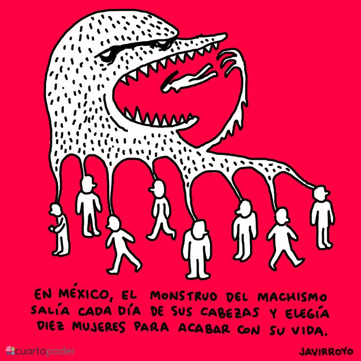
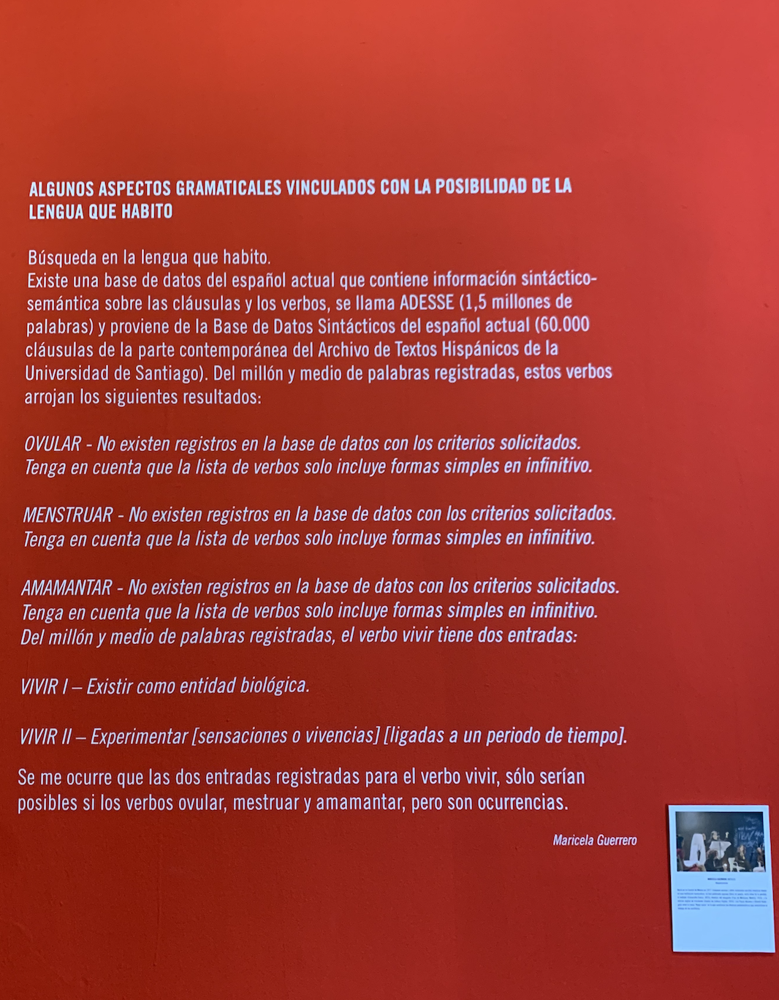
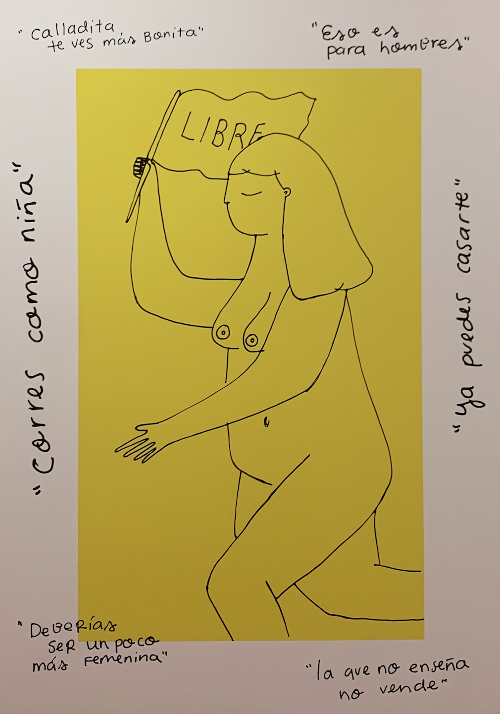

Men do not to take care of their kids, women do.
Men do not get involved in housework unless it is to exercise punishment or establish some rules.
The monster of "Machismo" came out of their heads and chose 10 women to kill that day.
Men must have an active and heterosexual sexuality.
Men should not express their emotions and feelings.
"I don't wan't to get killed"
Women are taught to wear appropriate clothing so they won't get harrased by men instead of men being taught to respect women regardless of what they are wearing.
Menstruation and being gay is a "taboo".
 This image shows how the verbs "ovulation", "menstruation", and "breast-feeding" do not appear in a Spanish dictionary which contains 1.5 million words
This image says statements like "the more quiet you are the prettier you look", "you are finally ready to get married!", "That is made for men", "You run like a girl", "You should be a little bit more feminine", and "The one that does not show skin will not sell."
"Of course, you are a woman."
"Men are more rational while women are more emotional."
"You are too smart and fun to be a woman."
"In reality, women desire to leave their jobs and become a housewife."